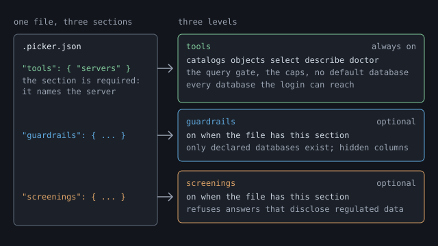

Shoddy · Picker
SELECT and DESCRIBE in SQL Server, for an assistant. Named for the rag pickers, who sorted the stock by hand and changed none of it.
pick lets an AI assistant read a SQL Server database, and it lets the assistant do nothing more. pick does this work at three levels. Most of this page describes the first one, the tools level, and the last part gives one paragraph each to the other two, guardrails and screenings.
First, here are the words this page uses. SQL Server is a database server from Microsoft, and a database is a store of data kept in tables. A query is a request for data written in the SQL language, and a SELECT statement is a query that only reads. An assistant reaches pick through MCP, the protocol (a set of rules for messages) that AI clients use to call outside tools.
pick. It is the third program in this repository, beside fettle and burler. It has its own server for the assistant, its own command line and its own configuration file, and it shares no code with the other two.
tools section is required, because it names the server. The other two are optional, and each turns its level on.| Level | On when | What it adds |
|---|---|---|
| tools | always, once .picker.json names a server | a connection, the query gate, the five verbs and the caps |
| guardrails | the file has a guardrails section | declared databases, verbs per database and scope, hidden columns |
| screenings | the file has a screenings section | the screen on every answer, the models, and exit code 13 |
The tools level is always on, and it needs one file with one section in it. The file is .picker.json in your project folder, and the section is tools. That section names each server and says how to connect to it, and it declares nothing else.
{ "tools": { "servers": { "main": { "connect": "env:MAIN_SQL" } } } }The value env:MAIN_SQL tells pick to read the connection string from the environment variable called MAIN_SQL. A connection string is the text that says which server to reach and how to sign in to it. An environment variable is a named value your system keeps outside any file, so the password never sits in the project.
At this level, every database the login can enter is open to the assistant. A login is the account that pick signs in with, and the server decides which databases it may enter. pick leaves out the four system databases that every SQL Server has. Each open database allows the same three verbs: list, select and describe.
Every statement passes through the query gate before it can reach the server. The gate first parses the statement, which means it breaks the text into its parts and checks each one. If any part is not on the gate's list of known parts, the gate refuses the whole statement.
SELECT 1; SELECT 2 is refused, because one call carries one statement.INSERT, UPDATE, DELETE, MERGE and EXEC are refused, because pick has no way to change data.sys.* and INFORMATION_SCHEMA hold facts about the server itself, and both are refused. The describe verb answers questions about a table's shape instead.FROM Customers in all of the open databases. If two databases both hold a Customers table, pick refuses the query and names both of them, and you write the full name to fix it.pick rewrites a statement that passes before it runs it. Each table name becomes its full three-part name, such as Sales.dbo.Customers. The star in SELECT * becomes a list of the columns, and the answer shows you that list.
Five verbs do all of pick's work. You type them at the command line and the assistant calls them through MCP, and the answer is the same either way.
| Verb | What it answers |
|---|---|
catalogs | which levels are on, then each server and its databases, without opening a connection |
objects | the tables and views you may see, where a view is a saved query that looks like a table |
select | the rows from one SELECT statement, after the gate passes it. |
describe | a table's columns, indexes and keys, with a hash code that changes when the table changes |
doctor | whether the file loads and each server answers, and it never prints a password |
A cap is a limit that pick sets on every answer, so that one query cannot flood the assistant. Each answer says so when a cap cut it short.
--limit N with another number.timed-out.If .picker.json has a guardrails section, only the databases that section declares exist for the assistant. Each database and each scope says which of the three verbs it allows. A scope is a rule for a set of tables, and it can also hide columns. pick refuses a hidden table or column in the same words it uses for one that does not exist. Guardrails →
If the file has a screenings section, pick checks each answer before it leaves. When an answer would show regulated data, such as a social security number, pick refuses the whole answer with exit code 13. The refusal names a category and a count, and it quotes none of the data back. Some categories need models, which run in burler, a helper program that sits beside pick. Screenings →
To start, go to the quick start, which sets up the tools level in two steps. Tools, guardrails and screenings each have a page, and the reference holds every refusal and exit code.